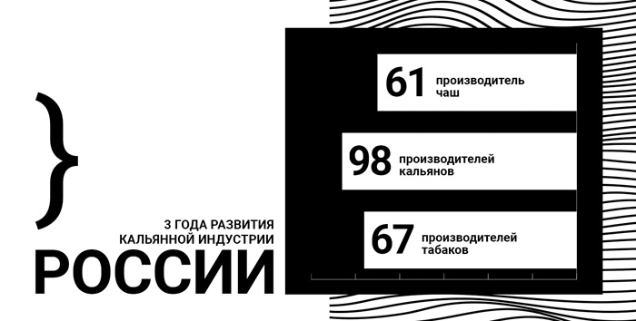
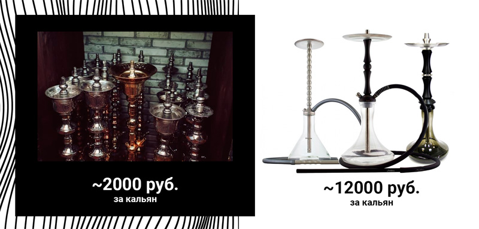
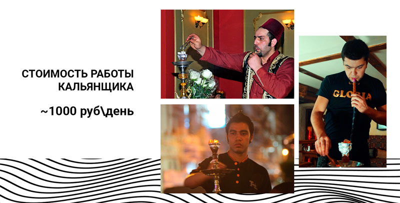
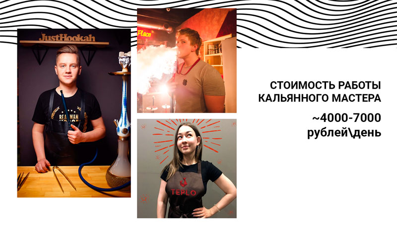

Собираюсь заказать кальянный кейтеринг: что важно знать?
Привет! Эта статья предназначена для тех, кто собирается заказывать кальянный кейтеринг и хочет разобраться в услугах с кальянами.
Меня зовут Илья и уже более 6 лет я работаю в кальянной индустрии. За такой срок я проработал практически во всех структурах: администратор в кальянной, кальянщик, шеф-кальянщик, управляющий кальянной, управляющий кальянного магазина, технолог кальянной табачной продукции, работал на всех кальянных выставках и не раз читал лекции перед профессиональной аудиторией. И сегодня я хочу поговорить о кальянном кейтеринге, а именно как складывается цена за услугу, и почему стоимость может стать причиной неприятных ситуаций на вашем мероприятии.
В Москве кальянный кейтеринг можно точно назвать неразвитой структурой: большинство предложений на рынке остановились в развитии еще где-то в 2012 году.
КАК ЭТО ПОНЯТЬ И ПОЧЕМУ?
Россия – безусловный лидер по производству кальянной продукции во всем мире. Это поспособствовало сильнейшему скачку развития данного ремесла в нашей стране и изменило культуру, переродив понятие “кальян”.

Чтобы тысячам кальянных оставаться “на плаву”, необходимо удивлять своих гостей, внедряя все новое и совершенное оборудование с современными технологиями.
ОДНАКО ЭТО НЕ РАБОТАЕТ В КАЛЬЯННОМ КЕЙТЕРИНГЕ
Почему? Ответ прост: заказчики выездных служб с кальянами, как правило, не особо следят за развитием этого рынка, а чаще вообще не разбираются в кальянах, что позволяет легко продавать им “воздух” и сильно спекулировать ценниками.
Уделите буквально 3 минуты вашего времени, чтобы точно понимать, как это работает и за что вы платите, заказывая услуги кальянного кейтеринга в Москве.
1. Какие кальяны должны быть на выезде в 2020 году?
Примерно до 2013 года в нашей стране еще никто не начинал заниматься производством кальянов, поэтому все курили на кальянах из Восточных стран: Египет, Сирия и т.д. Самый известный и популярный мировой бренд кальянов: Khalil Mamoon (Египет) и их визуальный аналог Sherif Fawzy (Египет).
Это приемлемые кальяны из нержавеющий стали. Однако есть один важный нюанс: это старая пережитая классика, которая уже ОЧЕНЬ ДАВНО неактуальна на Российском рынке. Если пройтись по кальянным Москвы, то вы сразу обратите внимание - никто уже давно не работает на подобном оборудовании. Такой кальян стоит в среднем ~ 2000 рублей и выносить его гостям – стыдно.

Как было замечено выше, в нашей стране почти сотня производителей, которые выпускают качественное современное оборудование. Мало того, что от кальяна абсолютно не сохранился восточный классический дизайн, так и сама технология курения кальяна стала очень гибкой и адаптированной под любого потребителя.
Средняя цена СОВРЕМЕННОГО кальяна ~ 12 000 рублей (ровно в 6 раз дороже того, с чем приезжают те, кто занимается спекуляцией цен).
Итак,
- Всегда уточняйте у подрядчика модели кальянного парка.
- Не работайте с теми, кто использует старое и неактуальное оборудование на рынке.
- Обслуживать мероприятие старыми Египетскими кальянами в 2020 году – стыдно.
- Чем больше выбор моделей кальянов – тем легче будет выбрать вашим гостям “под себя” (тяга, внешний вид, продув и т.д)
2. Какие табаки нужны на ваше мероприятие?
Это самая интересная и моя любимая часть статьи. Хотя бы потому, что многие кейтеринговые службы на вопрос “А какие вы используете табаки?” отвечают: “Хорошие.” ...
До 2013 года рынок был забит разными зарубежными брендами с низкой ценой и низким качеством. Важно сразу огласить название производителей, с которыми давно уже не работают добросовестные представители кальянных услуг: Adalya (80р за 50г), Al Fakher (90р за 50г), Fasil (90р за 50г) и т.д.
Спустя время Россия стала лидером по количеству производителей табака для кальяна (67 брендов), и, безусловно, лидер по качеству. Вся отечественная продукция максимально распространена во всех профильных заведениях страны и известна всем кальяно-любителям: DarkSide (1850р за 250г), Daily Hookah (400 руб за 40г), DUFT (700 руб за 125г), Spectrum (700 руб за 100г) и т.д.
Самые внимательные читатели обратили внимание на цены и сразу приблизительно их сравнили. Все верно: хороший табак в НЕСКОЛЬКО РАЗ дороже старых дешевых брендов
К сожалению, многие кальянные кейтеринги в Москве работают с дешевыми табаками, благодаря чему очень сильно экономят.
Итак,
- Дешевые табаки – это плохо, но работать с ними можно, только если это добавка и только в руках профессионального мастера, но ни в коем случае не как табак для всех кальянов.
- Не работать с качественным, современным и дорогим сырьем, значит не понимать вообще, как должен куриться кальян в 2020 году.
- Отвечать на вопрос гостей “а какие у вас есть табаки?” на мероприятии названиями брендов самых дешевых табаков – ОЧЕНЬ И ОЧЕНЬ НЕ ПРОФЕССИОНАЛЬНО!
- Как правило, за хороший табак всегда берут дополнительную стоимость – всегда уточняйте этот момент.
Заказывая кальянный кейтеринг в TEPLO Company вы получаете огромный выбор табаков самых лучших известных брендов, а главное – Никаких наценок. Чтобы не пожелали ваши гости – все уже включено в стоимость.
3. Самое главное – это люди. О кальянных мастерах.
Пожалуй, это самый главный раздел всей статьи, потому что от мастера напрямую зависит качество оказываемых услуг в нашем деле.
Многие представители кальянов на выезд не уделяют должного внимания персоналу. Мнение многих руководителей сходится в том, что кальян может забить кто угодно и это абсолютно несложно. Отсюда все сводится к привлечению дешевой рабочей силы из стран ближнего Зарубежья, которая чаще всего не имеет гражданства на территории Российской Федерации. Говорить в данном случае о навыках мастера (которые могут привести к страшным последствиям в п.4), а также элементарно хотя бы о наличии медицинской книжки не имеет смысла.

А теперь о квалифицированных кальянных мастерах, которые:
- Умеют грамотно и комфортно общаться с каждым гостем на вашем мероприятии и растворяться в атмосфере, дабы у гостей не возникало чувство присутствия постороннего человека
- Должны всегда быть готовым забить кальян с любой крепостью и любым вкусом, который попросит гость
- Всегда будут рады ответить на любой вопрос, связанный с кальяном и проконсультировать аудиторию
- Имеют огромный опыт и легко подстраиваются под любой формат мероприятий

Всегда принимайте во внимание данное сравнение, когда получаете цены на выездные кальяны для вашего мероприятия и уточняйте всю информация о кальянщике, который будет работать на вашем празднике.
4. Почему кальяны на выезд – это опасно?
… и почему 3 раздел начался со слов “Самое главное”.
Бывали случаи, когда клиент обращался к самым дешевым подрядчиком (теперь уже понимаем, что рискуем получить за самую низкую цену) и через некоторое время возвращался к нам, с требованиями взять на нас ответственность за самочувствие гостей на мероприятии.
Звучит странно, но реалии таковы: забить кальян несложно (как думают многие), но вот вести кальян на протяжении всего сеанса курения без глубоких навыков - невозможно.
Настоящие профессиональные мастера забивают кальян только после первичного общения с аудиторией и делают это осознанно: на каждом выезде кальяны забиваются индивидуально в зависимости от того, как часто ваши гости курят кальян. На протяжении всего сеанса курения мастер тщательно следит за перегревом табака и не дает ему “испортиться”. Каждый кальян перезабивается стабильно через 45 минут, чтобы не допускать выделения угарного газа и чтобы сохранять процесс курения стабильно дымным и сочным.
К чему этот ритуал, казалось бы, правда? К тому, что отравиться кальяном – очень легко! Отсутствие минимального комплекта знаний у мастера часто приводит к тому, что кальян начинает перегреваться и горчить. Помимо неприятных ощущений от курения, в организм человека попадает угарный газ, что вызывает кислородное голодание и влечет за собой страншные последствия: тошнота, головокружение, рвота и прочее.
Выбирая кальяны на свое мероприятие, ВСЕГДА уточняйте квалификацию мастеров!
5. Итого: сколько это должно стоить
На вопрос о том, сколько же должна стоить данная услуга, я, как представитель нашего кейтеринга TEPLO, отвечу очень грубо и прямо, - столько, сколько это стоит у нас :)
Посчитать примерную стоимость вы легко можете сами, ну а я приведу еще немного цифр.
Чтобы вы понимали, из чего складывается ценообразование, возьмем в пример самый популярный тариф “5 кальянов на 4 часа”. В нашем случае его стоимость составляет 9 900 рублей.
1) Ровно половина – это работа профессионального мастера, который за меньшую сумму даже не задумается работать у нас.
По данному тарифу будет забито приблизительно 25 кальянов. В среднем на 1 забивку кальяна требуется ~20 грамм табака. То есть всего потребуется 500г табака.
По ценам самого дешевого табака (см. пункт 2) мы потратим ~800 рублей.
По ценам того самого табака, на котором мы не работаем :)
По стоимости качественной табачной продукции данный объем табака обойдется в ~3600 рублей.
Все остальные выводы вы можете сделать сами, если еще не сделали, подойдя к концу этой статьи.
Заказывайте кальяны у профессионалов и спрашивайте у них подробно по каждому из пунктов данной статьи.
Удачи!